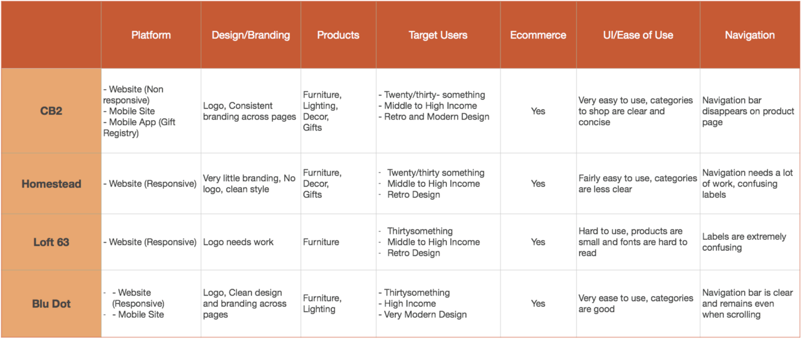
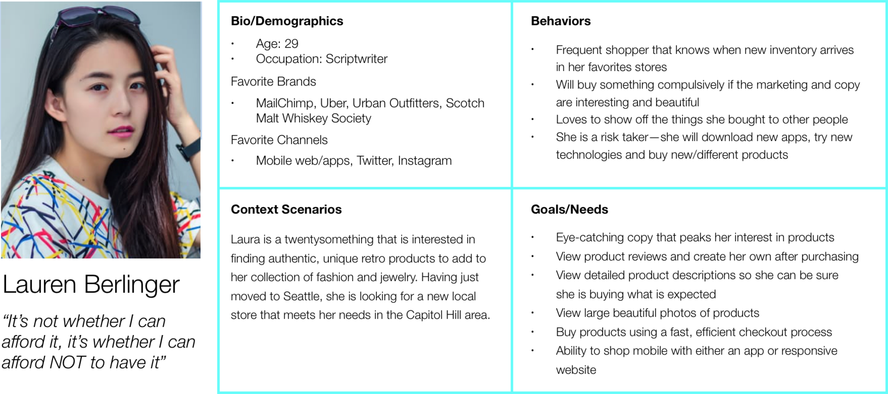
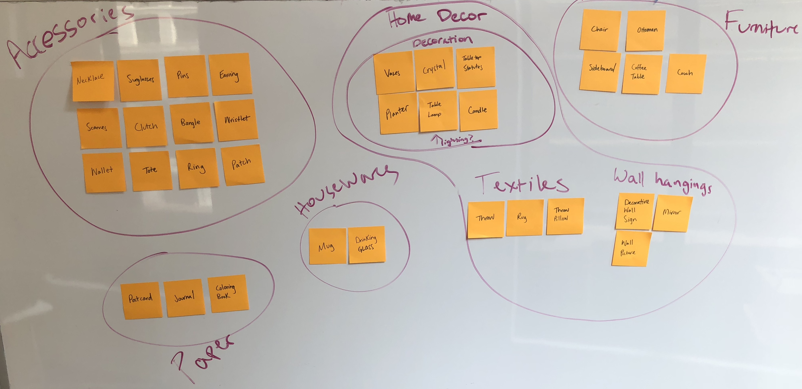
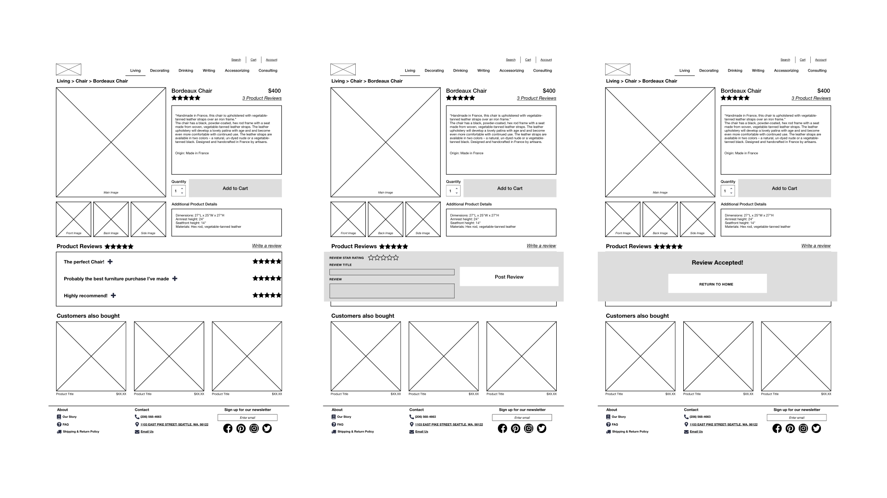
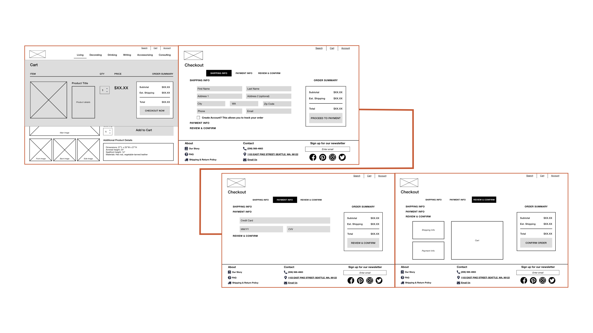

Redesign their website to have a better user experience
Project Brief: Retrofit Home is looking to redesign their website to have a better user experience and increase their sales both in store and online.
Retrofit Home
Pen/Paper, Sketch, Omnigraffle, Keynote
2 Weeks
Clickable wireframe prototype, Sitemap
None
UX Designer focused on content strategy, information architecture & interaction design
I then performed business analysis of competitors in order to get a better sense of where they stood in the market.
From this research, I noted that their competitors all had:
When doing a feature comparison among the companies, Retrofit Home is lacking in a number of features. For example, shown on the right is one of their competitor’s product pages, where I’ve highlight features missing from Retrofit’s site including:
After visiting the business, I created a sitemap for Retrofit Home and noted several navigational issues including:
For this project, I was provided with personas to choose to design for. The persona that best fit Retrofit Home’s redesign was Lauren based on her demographics, behaviors, and needs.
Shoppers need a way to efficiently navigate Retrofit Home’s website because the current site is unstructured in a way that impedes product discoverability.
In addition, shoppers need a way to create product reviews because reviews build confidence in purchase decisions.
Improve Retrofit Home’s website—through more intuitive navigation, creating a product review feature and streamlining the checkout process—to achieve higher online sales and in-store traffic.
I ran a card sorting activity to have users categorize all of the products that Retrofit sells to fix their navigational issues.
From this activity, I was able to better categorize their products and begin work on a new website navigation.
I created new product categories based on the activity associated with the product for the navigation, which helped created a standard syntax for users.
In the Utility Nav,
In the Footer,
I drew up some initial sketches of the redesign to help determine layout and help solidify some of the page elements.
For the home screen, I emphasized the new navigation and provide larger product photos.
For the product screens, I came up with early versions of the product category and product detail page layouts.
From this, I learned that I needed to include more product summary and detail space because that was important to my persona.
After initial sketches, I drew up some more in depth paper prototypes to work out some the interactive elements like the cart function and checkout process.
From working on this, I realized that it would be better for Lauren to have the product review section higher up in the layout due to its importance.
I also decided from testing this that I wanted the checkout form to have better indicators of progress for the user.
On the product page, I responded to Lauren’s pain points by featuring multiple, large product images, detailed product descriptions, and product recommendations.
The other major element added was the product review feature. The product review flow begins on the product detail page where users were able to click Write a Review which is underlined for the user to know it’s a hyperlink. Clicking the hyperlink would then open a product review modal right below. The user can then enter a star rating, title and a review for the product. After clicking Post Review….The user would receive a message letting them know that their review would then be added.
In the checkout flow, after Lauren added a product to her cart, a modal would slide down from the header notifying her that the item was added to her cart. The option to checkout would be immediate and would be colored to draw attention to the action. After clicking Checkout Now, she would be brought to the shipping information page. The progress indicator would help assure where she is in the process and action buttons would be easily clickable for her. She would move to the updated payment page, click Review & Confirm when she entered her payment details. And finally on this page she could review her order details before confirming the payment.
From usability testing, the elements that needed work were:
Account functionality
Checkout process